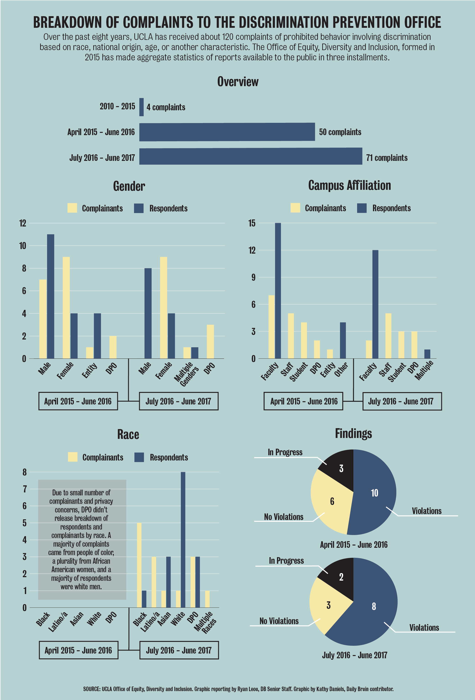

Race discrimination: treating a person unfavorably because they are of a certain race or because of personal characteristics associated with race, such as hair texture, skin color and certain facial features.
When alleged discrimination happens on campus, who investigates the cases and determines disciplinary action depends on what role the accused person plays in the UCLA community – faculty, staff or student – according to the UCLA Office of Equity, Diversity and Inclusion.
At UCLA, investigative entities are divided so that individual offices investigate whom they have authority over. For instance, the Staff Diversity and Compliance department of UCLA Human Resources usually investigates complaints of discrimination against staff, and the Office of the dean of students usually investigates complaints against students. The Discrimination Prevention Office, housed under the EDI office, mostly investigates reports of discrimination by faculty.
The DPO also has the authority under UCLA Policy 240 to investigate any individuals or entities whose actions negatively affect campus climate, as determined by EDI office Vice Chancellor Jerry Kang.
Different university policies apply to faculty, staff and students – the DPO generally uses the Faculty Code of Conduct to determine the appropriateness of faculty behavior or actions, the Dean of Students uses the Student Conduct Code and SD&C follows the University of California's Discrimination, Harassment, and Affirmative Action in the Workplace policy, which applies to all UC applicants and employees.
Lillie Hsu, a discrimination prevention officer in the DPO, said an action that violates University policy does not require intent to discriminate in order to be considered discrimination, as long as it negatively impacts an employee’s work environment or student’s educational opportunities, such as preventing job advancement or creating a hostile work or classroom environment.
The EDI office said in an email statement that academic freedom, free speech and discrimination are intertwined, based on the potential impact of speech or actions.
Speech can undermine equality in an educational setting if it interferes with individuals’ or a group’s ability to learn in the classroom, the statement added.
“Regardless of whether one communicates through oral speech or expressive conduct, that behavior could potentially impact campus climate,” the office said.
Investigating discrimination
When a person experiences what they believe to be discrimination, they can file a complaint with the DPO, Dean of Students or SD&C, depending on the association of the person the complaint is against.
Though each office responsible for investigating complaints has its own specific procedures, each generally follows a similar process.
In the case of the DPO, when investigating complaints against faculty or an incident that negatively affects campus climate, the office will first notify the person making the allegation, or complainant, about the process of investigation, limited confidentiality of investigation reports and warnings against retaliation. The DPO also lays out possible outcomes of the report and relevant procedures for disciplinary actions.
A DPO investigator then conducts an initial assessment, interviewing the complainant to clarify the allegations and determine whether they plausibly allege acts of prohibited conduct. They also consider whether there is sufficient information to actually open a formal investigation or to choose an alternative resolution.
If the investigator determines there is not enough evidence of discrimination, they close the case without investigation. If the complainant and respondent prefer an informal process, the alleged misconduct is less serious, or the report is made anonymously or by a third-party complainant, the DPO could initiate an alternative resolution. An alternative resolution could take the form of mediation, a settlement, counseling meetings or targeted educational and prevention programs, among other possibilities.
Although a complainant can request not to have a formal investigation, the DPO makes note of the request but also considers whether the seriousness of the allegations, effect on campus community and behavior could be a part of a pattern that requires further investigation.
Should the DPO proceed with a formal investigation, the office would select an impartial investigator, either from within the DPO or other individuals within the EDI office if conflicts of interest exist, and send out written notices of investigation to the complainant and respondent summarizing the allegations, potential violations of University policy, purpose of the investigation and expected timeline, among other information.
The actual investigation comprises interviews of the respondent, complainant and relevant witnesses, as well as inspecting documents anyone might submit to make their case.
Investigations usually take no longer than 60 business days, Hsu said, but some cases that require interviewing many witnesses or involve many documents can take longer, in which case everyone gets notified of the extended timeline.
“It can be hard to schedule all witnesses,” she added. “And, sometimes as we go along, a witness will identify other witnesses, requiring more time for the additional interviews.”
Investigations use a "preponderance of evidence" standard to determine whether a violation occurred. Under this standard, the investigator judges whether it is more likely than not that an alleged incident happened and that it violated University policy.
Hsu said witness testimonies are usually enough to make a judgment, but in cases without witnesses or documents, investigators need to make credibility determinations about witness statements and potential motivations.
“There are different things to look at, like corroboration (from witnesses) in some form,” Hsu said. “Or, you can look at if someone has a motive to exaggerate or not tell the truth.”
After the investigation concludes, the investigator prepares a written report reiterating what was in the notice of investigation and adding a description of the investigation, summary of all relevant statements, analysis of whether policy violations occurred and determination of whether enough evidence exists to conclude an incident was more likely than not to have happened.
Notably, the DPO does not actually oversee discipline for violations of UC policy. It reports whether or not a person violated University policy to the office overseeing them: for students, the Dean of Students; for staff, the staff member's department; for faculty, the vice chancellor of academic personnel or the Academic Senate.
To discipline faculty members of the Academic Senate, additional Academic Senate committee procedures must be followed that further investigate allegations of discrimination and conduct a formal hearing, if necessary.
Depending on the severity of the violation, the responsible office or department has a variety of options for disciplinary actions. For minor violations, an administrator can issue warnings to student or staff respondents, and written censure or payment cuts to faculty respondents. Demotions can be considered for more serious violations. The most serious violations can result in dismissal of students and faculty or termination of staff.
The data
The EDI office has released data on complaints of prohibited conduct, including race discrimination, that the DPO has investigated for the past two years in Public Accountability Reports.
Data for other offices that investigate reports of discrimination by students or staff were not as publicly available due to confidentiality requirements and privacy concerns.
Between April 2015 and June 2016, the DPO received 50 complaints of discrimination based on race, national origin, religion or age. Of these, 19 resulted in formal investigation, with about half confirming a violation of University policy. Between July 2016 and June 2017, the DPO received 71 complaints of discrimination, 13 of which resulted in formal investigation and about 60 percent of cases confirmed prohibited conduct occurred.
The DPO generally investigates complaints against faculty respondents; faculty make up about 80 to 90 percent of the subjects of formal investigations. However, complaints come from a variety of sources, including students, staff and other faculty.
For both years, there were more women complainants than men complainants. Sometimes the DPO itself acted as a complainant, which occurs when substantial evidence exists that University policy was violated despite there being no individual complainant.
Though the first year’s worth of DPO reports did not break down complainants and respondents by race, it did note that the majority of complainants were people of color and a plurality were African-American women, and a majority of respondents were white men. From 2016 to 2017, about 40 percent of cases had African-American complainants, about a quarter had Latino/a and a quarter were brought by the DPO. White respondents made up 60 percent of cases, and Asian respondents made up a quarter of cases.